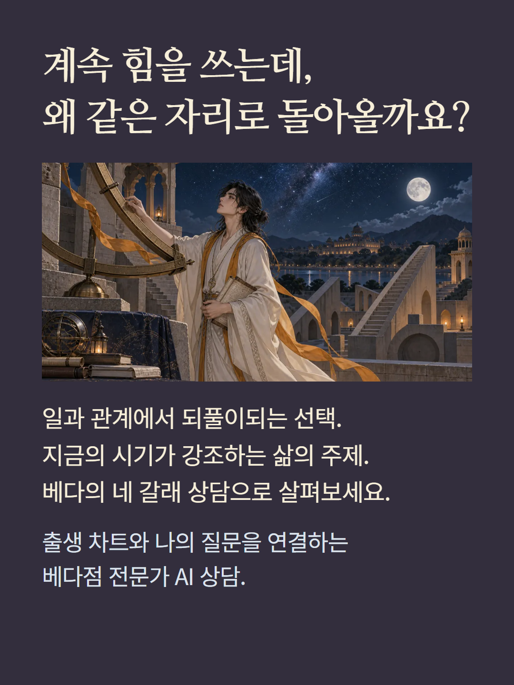
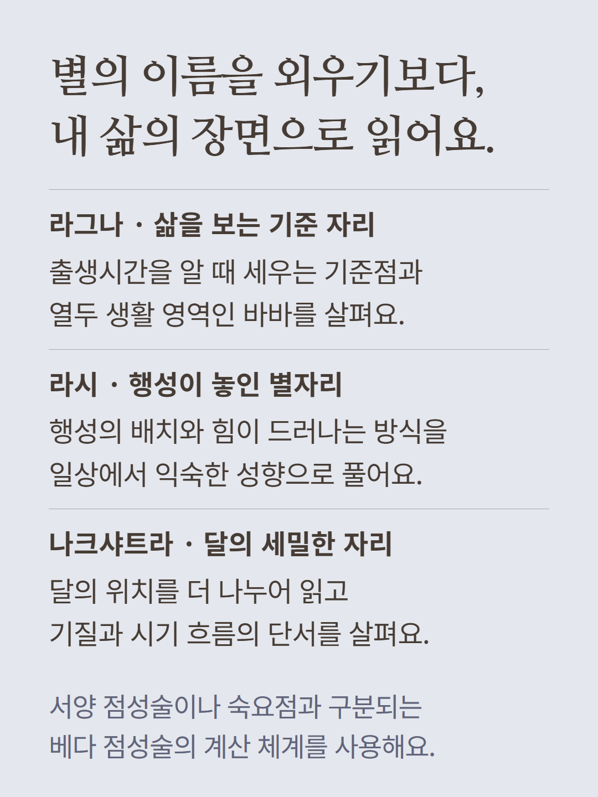
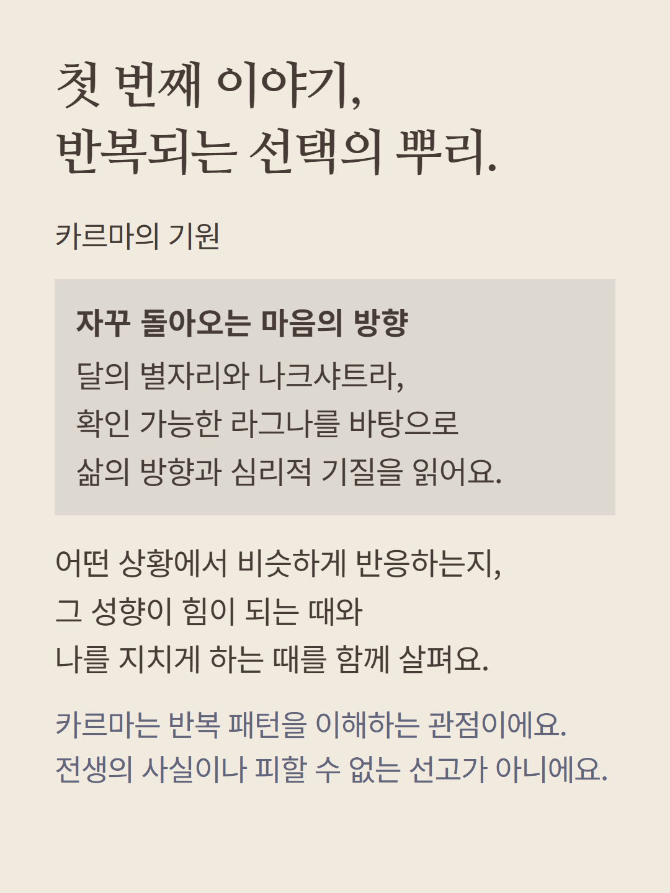
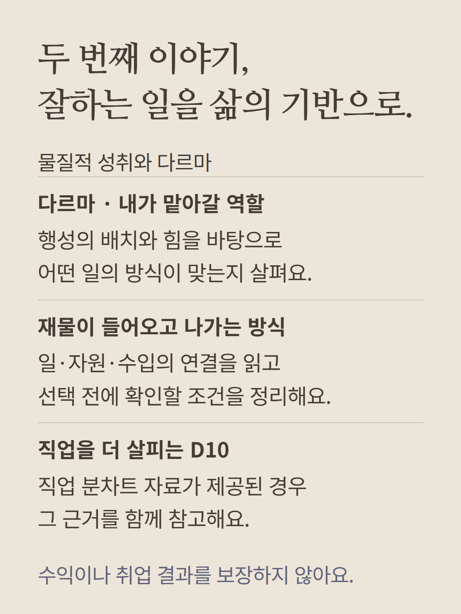
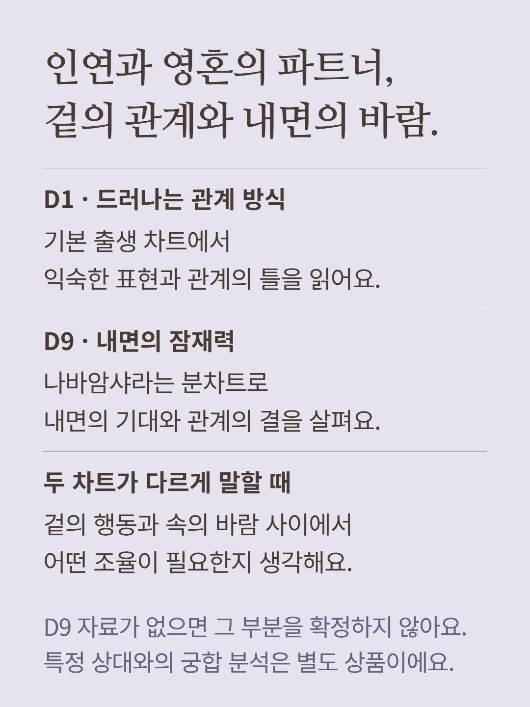
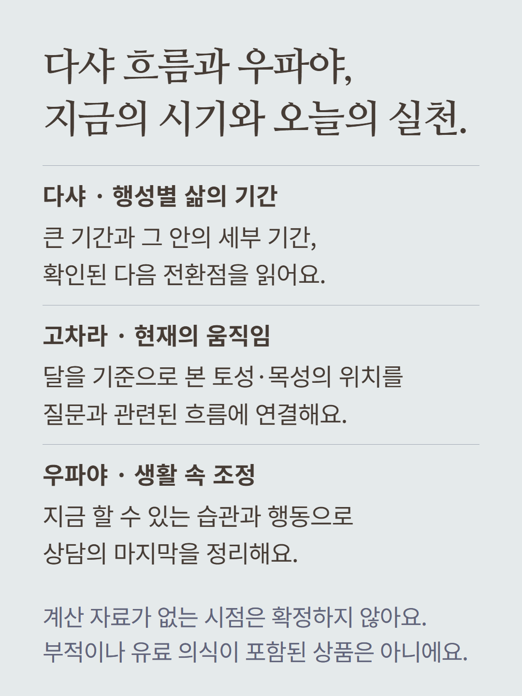
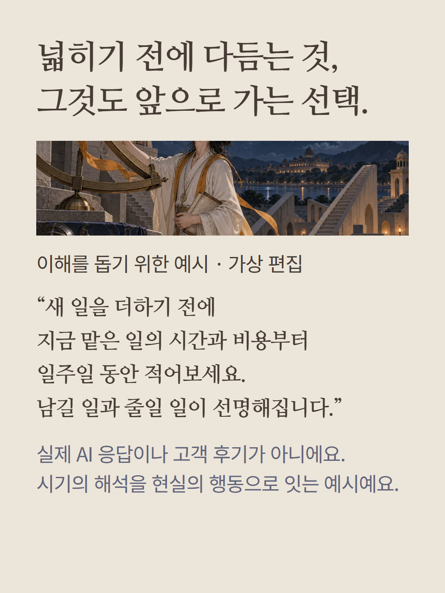
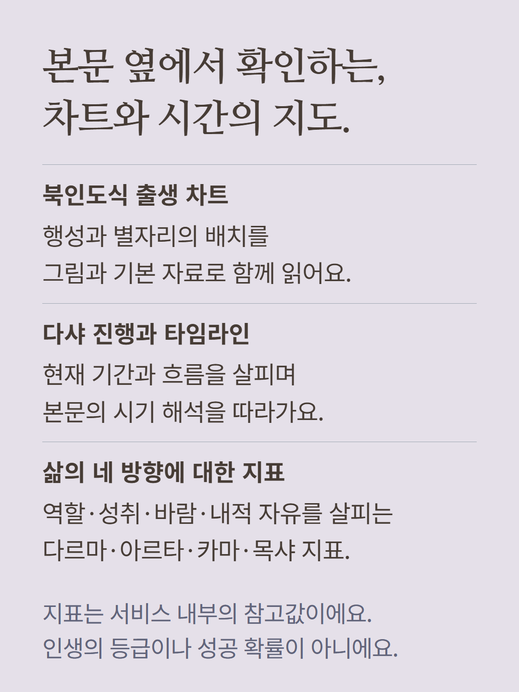
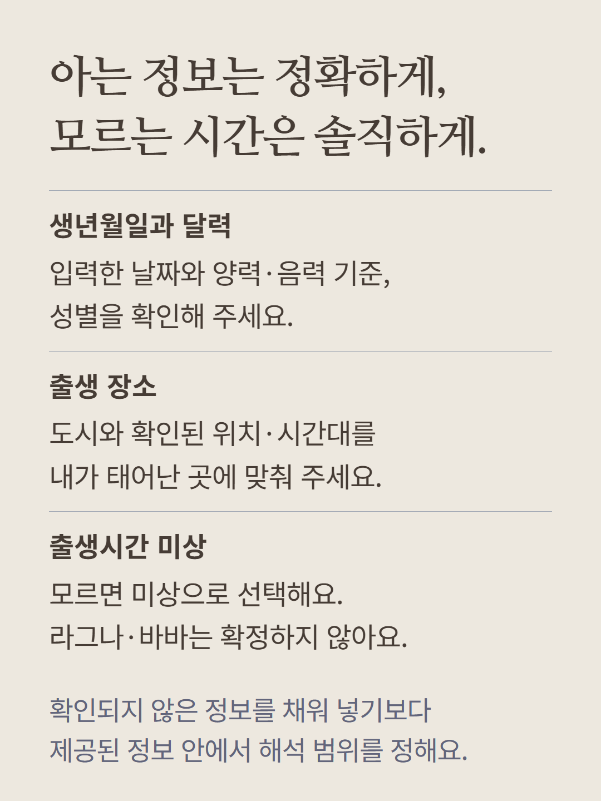
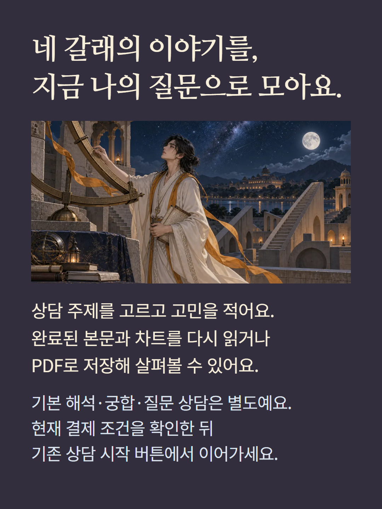

출생 정보와 베다 점성술 계산 자료를 바탕으로 AI가 작성하는 전문가 상담입니다. 카르마의 기원, 물질적 성취와 다르마, 인연과 영혼의 파트너, 현재의 다샤 흐름과 우파야의 네 갈래 본문으로 읽습니다. 라그나·라시·나크샤트라·행성·바바·다샤 자료를 사용하며, 직업 D10과 관계 D9 분차트 및 다음 기간·고차라는 제공된 계산 자료의 범위에서 참고합니다. 출생시간 미상은 라그나와 바바를 확정하지 않는 등 해석이 제한됩니다. 출생 장소의 위치와 시간대를 확인해 주세요. 북인도식 차트, 다샤 진행과 타임라인, 기본 자료, 다르마·아르타·카마·목샤의 네 참고 지표가 본문과 함께 표시됩니다. 지표는 내부 참고값이며 성공 확률이나 인생의 등급이 아닙니다. 완료된 결과는 PDF로 저장할 수 있습니다. 카르마는 반복되는 기질과 선택을 이해하는 관점이며, 우파야는 생활에서 실행하는 조언으로 안내합니다. 날짜의 사건·수익·관계 결과를 보장하지 않습니다. 기본 해석, 특정 상대와의 궁합, 질문 AI 상담은 별도 상품입니다. 예시는 이해를 돕기 위한 가상 편집이며 실제 상담이나 고객 후기가 아닙니다. 현재 결제 조건을 확인해 주세요.